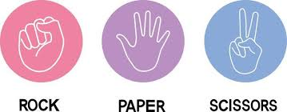

Projects

🎮 Rock Paper Scissors Game
A fun browser game built with HTML, CSS, and JavaScript. Challenge the bot and see who wins!

⛅ Weather App
A smart web app that allows users to book community sports fields in eMalahleni based on real-time weather forecasts. 🧠 Tech used: HTML, CSS, JavaScript, Weather API simulation, modal logic, UX enhancements 💡 This project solves a community planning problem and shows off frontend interactivity and conditional logic skills.